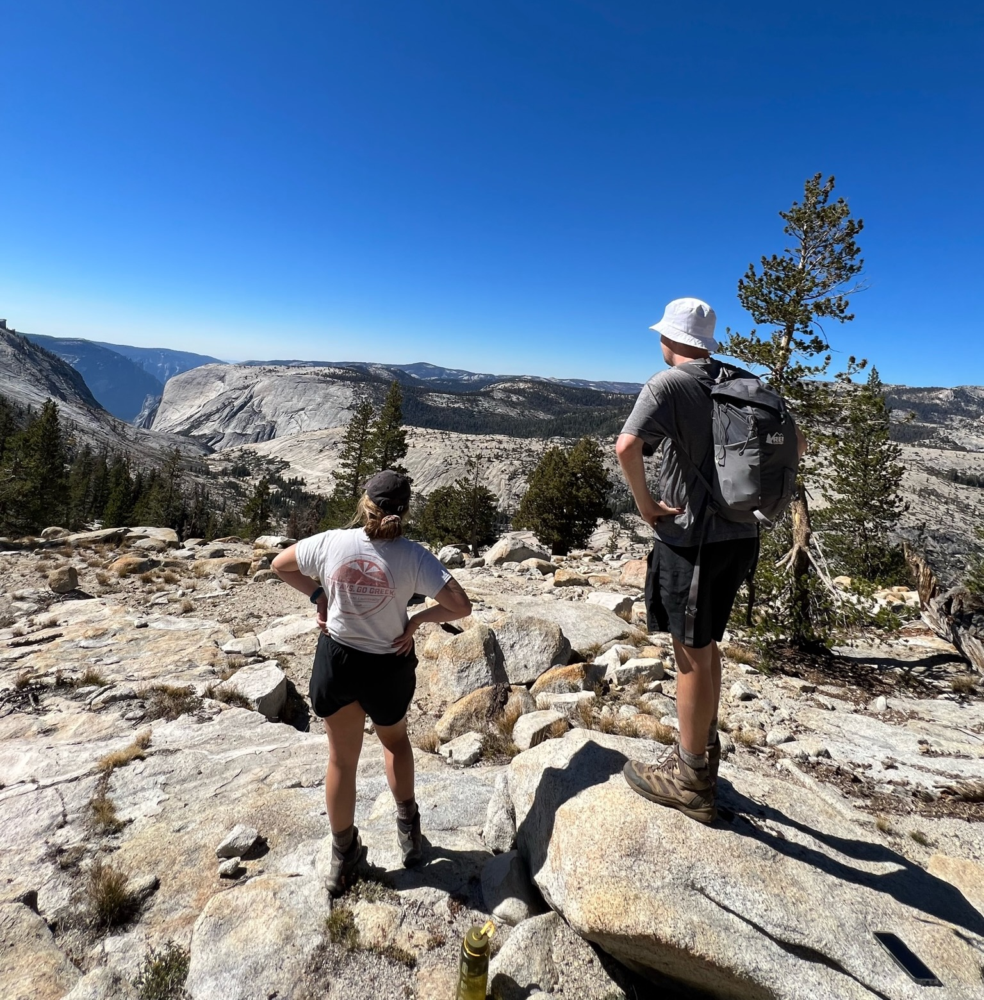

My current projects are focued on how gender-based violence, such as femicide, in Latin America impacts women deciding to run for office, vote, and partipcaite and protests. I am currently working on research that explores the relationship between femicide and gender representation. In past work I have examined the role representation plays in how women candidates are protrayed in media coverage.
My research interests deal with how violence affects political mobilization and particapation. I am interested in understanding how gender-based violence affects how women politcal candidates engage in politics. I also am interested in experimental design and computational social science.


In my free time I enjoy exploring the various state and national parks in California, skiing in Tahoe, and climbing at our local climbing gym.